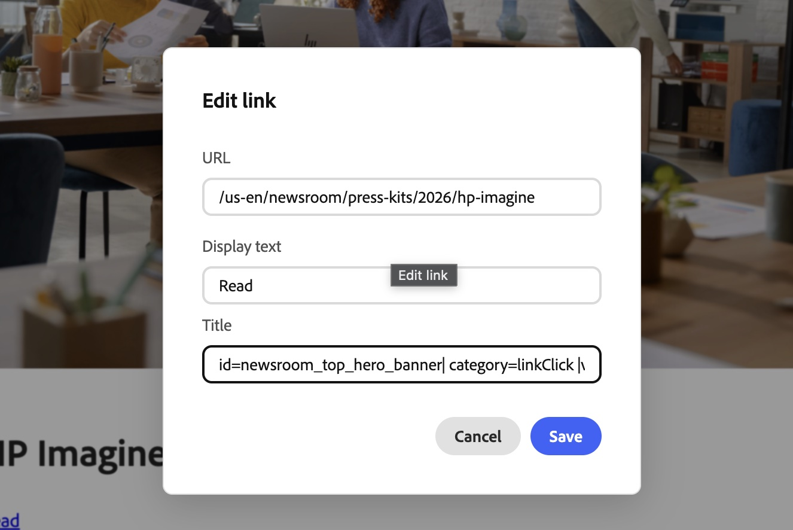
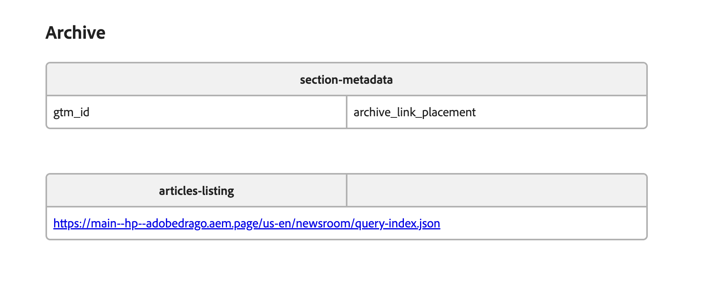
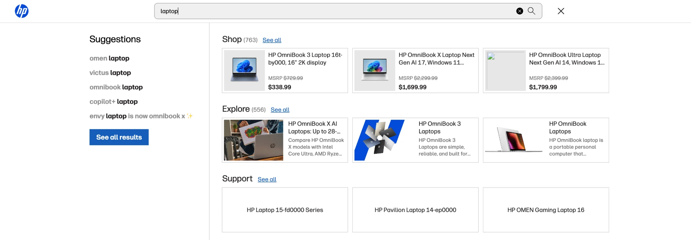

HP Newsroom on Edge Delivery Services
Rebuilding hp.com/us-en/newsroom and the Next-gen AI PCs page on Adobe Edge Delivery Services — migrating the site chrome, importing the full newsroom archive of 1,184 articles into Document Authoring, and building the blocks that power the landing page and the faceted archive.
Project overview
This effort recreates HP's US-English Newsroom — the public home for HP press releases, blogs, and press kits — and the Next-gen AI PCs page on Adobe Edge Delivery Services (EDS), authored through Document Authoring (DA). It follows an EDS block-based development model: the header and footer, articles, landing pages, and archive are all delivered as authorable blocks, with the newsroom feeds driven by a single content query index and the header and footer shared with other HP sites.
Goals
- Recreate the HP newsroom and the Next-gen AI PCs page on Edge Delivery Services, authored in DA.
- Migrate the full article archive (press releases, blogs, press kits) with metadata intact.
- Reproduce the landing pages and a faceted, searchable archive driven by a query index.
- Match HP's brand identity — typeface, color, header, and footer.
- Provide a shared global navigation: a header per site section that other HP sites can include.
- Keep analytics, search and SEO on par with hp.com: GTM click tracking, header search, and Related Links in the initial HTML.
Approach
- EDS block-based development only — every module is an authorable block, with variants for layout choices.
- A single content query index (
/us-en/newsroom/query-index.json) powers all dynamic listing blocks. - Content bulk-imported from the public HP sitemap into DA, one page per article, each carrying an EDS Metadata block.
- Sort and filter on an authored
created-dateand atopictaxonomy projected into the index. - Authored by the content team: headers per section (metadata sheet), GTM tracking (link editor), and page settings (metadata) need no developer release.
- Third-party content at the edge: Related Links are rendered by a CDN edge function so they are in the initial page.
Workstreams
| Workstream | What it delivers | Status |
|---|---|---|
| Site chrome | Newsroom header & footer + HP brand typeface (Forma DJR) | |
| Hierarchy Header | A different header per site section, authored in Document Authoring | |
| Shared global navigation | Header and footer that other HP sites can include with one script | |
| Content import | 1,181 articles imported to DA with metadata, previewed & reconciled (1,184 in the index now) | |
| Next-gen AI PCs | AI Solutions landing page built from reusable blocks and variants | |
| Newsroom pages | Newsroom home, Press Releases, Press Kits and Blogs listing pages plus article detail pages | |
| Article archive | articles-listing block — faceted, sortable, searchable | |
| GTM | Click tracking authored in the link editor or generated by the components; consent-aware loading | |
| Search | Header search suggestions and a search results page | |
| Related links (SEO) | Related Links rendered at the CDN edge so they are in the initial HTML |
| Attribute | Value |
|---|---|
| Effort | hp.com newsroom and Next-gen AI PCs → Edge Delivery Services migration |
| GitHub repo | AdobeDrago/hp · branch main |
| Authoring | Document Authoring — adobedrago/hp |
| Dev model | EDS block-based only |
| Brand typeface | Forma DJR (self-hosted, mirrors hp.com) |
| Brand color | #0096d6 (HP blue) |
| Content source | hp.com public newsroom sitemap (US-en) |
| Reference site | hp.com/us-en/newsroom · hp.com/us-en/ai-solutions/next-gen-ai-pcs.html |
Use case & requirements
Use case. Recreate HP's US-English Newsroom — the public hub for HP press releases, blogs, and press kits — on Edge Delivery Services, authored in Document Authoring. The experience is a landing page of curated, recent stories plus a faceted archive across the full back catalog, all reading from a single content query index.
Requirements gathered
| Area | What we found |
|---|---|
| Content source | HP's public sitemap (sitemap-aem-us-en.xml via sitemap_index.xml), filtered to /us-en/newsroom/ — ~1,183 pages spanning 2016–2026. |
| Content mix | 711 press releases · 323 blogs · 149 press kits (US-en only; ~80 other locale sitemaps exist if scope expands). |
| Per-page metadata | Machine-readable in each page <head>: og:title, description/og:description, og:image, created-date. |
| Topic taxonomy | Not in page metadata — HP's newsroom embeds a JSON index of all articles and filters client-side. Topics follow a fixed 46-topic taxonomy, extracted from that embedded index. |
| Templates | Two source templates — a post-2024 template and a pre-2024 one (breakpoint data-src images, DAM paths with spaces). Editorial body lives in the c-title-and-text-v2 component. |
Supporting analysis
A markup-consistency probe (12 pages across 3 templates × 2016–2026) confirmed press releases and blogs share one clean, stable template — a single importer, Phase 1 (~1,034 articles, low risk). Press kits are a heavier, interactive template (asset galleries, download modals, dropdowns) and were scoped separately. Descriptions are absent on ~1/3 of older pages, so the importer falls back to the first body paragraph.
Key references
Where the newsroom and the Next-gen AI PCs page live — the rendered previews, the authoring surface, the code, and the content index that feeds the listing blocks.
Deliverables
What shipped, at a glance.
-
Header & footer migrated (via EMA)HP newsroom mega-menu navigation and footer migrated and styled using the Experience Modernization Agent (EMA), then refined — responsive mobile nav and a dim/blur behind open menus.
-
HP brand typeface (Forma DJR)Self-hosted Forma DJR set as the body and heading font, replacing the boilerplate Roboto — matching hp.com.
-
Full archive imported (1,184 articles in the index)Bulk-imported into DA with metadata, previewed and reconciled (1,181 at import — 0 missing, 0 extra). The index now holds 710 press releases, 325 blogs and 149 press kits.
-
Query index + topic backfillA 1,186-row query index with a
created-date,type, andtopiccolumn; 753 pages backfilled against HP's 46-topic taxonomy. -
Newsroom landing pageA full-bleed hero plus latest-news, more-articles, and press-kits-listing blocks reading from the query index (press-kits-listing can also take a hand-picked set of URLs).
-
Faceted article archiveThe articles-listing block: keyword search, Media Type + Topics facets, four sort orders, removable chips, and Load More.
-
Hierarchy HeaderA different header per site section (main, US English, AI Solutions), chosen through the metadata sheet and authored in Document Authoring.
-
Shared global navigationThe header and footer can be included on other HP sites with one script and two empty tags, so a content change updates every site that uses them.
-
Next-gen AI PCs pageThe AI Solutions landing page built from reusable blocks and variants: hero, quick links, cards, banners, media feature, FAQ and footnotes.
-
Newsroom listing and article pagesPress Releases, Press Kits and Blogs listing pages, plus article detail pages for all three, with their blocks and page metadata documented.
-
New blocks and variants12 custom blocks in total (7 new in this project) and 25 variants for the AI landing page and newsroom, including
anchor-nav,footnotes,banner,media-featureandpress-contact. -
GTM click trackingTracking authored in the link editor or generated by the newsroom components, an editable placement name per section, page-view data from page settings, and consent-aware loading.
-
Header searchSearch suggestions for products, articles and support in the header, plus a Search results page block.
-
Related Links edge functionRelated Links rendered at the CDN edge so they are in the initial HTML, with a safe fallback to the plain page.
Site chrome — header & footer Complete
The first workstream migrated the newsroom's shared chrome so every imported page renders inside HP's own navigation. The header and footer were migrated and styled using the Experience Modernization Agent (EMA) — which generated the EDS block structure and base styling from the production site — then refined by the Drago team.
- Header — the HP mega-menu navigation, migrated via EMA and refined as an EDS block. Open menus dim and blur the page behind them; the nav collapses to a mobile menu through tablet and small-laptop widths.
- Footer — the HP newsroom footer, migrated via EMA into an authorable block.
Migrate HP newsroom header and footer to EDS) so that all subsequently imported articles inherit the correct chrome.
Brand typeface — Forma DJR Complete
HP's brand typeface is Forma DJR, self-hosted on hp.com as a single face with a synthetic bold and an Arial fallback. The boilerplate EDS project shipped with Roboto; we swapped in Forma DJR so the newsroom reads as HP.
- Added
fonts/forma-djr.woff2and.woff, removed the Roboto faces. - Set both
--body-font-familyand--heading-font-familytoforma-djr, forma-djr-fallback, arial, sans-serif. - Arial stands in as the fallback face before Forma DJR loads — the same behavior as hp.com.
Shared global navigation
HP's header and footer are the same global navigation across many HP websites. On Edge Delivery Services that navigation is built once, authored once and shared: the newsroom, the AI Solutions pages and any other HP site can show the same header and footer, and a change made by the content team reaches all of them at the same time. This is how the newsroom keeps hp.com's real navigation without copying it.
The idea
Header and footer documents in Document Authoring
Served from the EDS site like any content
Newsroom and any HP site add a small snippet
Why a shared navigation
- Consistency: visitors see the same menus, search and footer links wherever they are on HP.
- One place to edit: add a menu item or fix a footer link once; every site that uses the shared navigation updates after publishing.
- No release on the host site: other teams don't change code or deploy to pick up navigation changes, which saves their time and removes risk.
- Brand and legal control: the privacy links, country selector and logo stay under one team's control, so every site shows the approved version.
What is shared
| Part | What it includes |
|---|---|
| Header | HP logo, mega-menu, search with suggestions, cart, account menu, mobile menu and the optional newsroom bar |
| Footer | Country selector, link columns and the legal row with the privacy choices icon |
| Behaviour | Hover and tap menus, keyboard support, responsive layout, built-in click tracking on every link |
| Look and feel | HP fonts, colours and spacing, applied the same way on every site |
Adding it to another HP site
The web team of the host site adds one script and two empty tags once. After that, the content team never has to touch the host site again.
- Add the script and tags
Place the script on the page and an empty header and footer tag where the navigation should appear.
- The navigation loads itself
It fetches the current header and footer from the shared site and shows them in place.
- Stays up to date
Every time the content team publishes a change, the host site shows it on the next visit.
Who does what
| Team | Responsibility |
|---|---|
| Content team | Edits and publishes the header and footer documents; decides which header each site section uses. |
| Host site's web team | Adds the snippet once. No further work for later menu or footer changes. |
| Analytics team | Navigation clicks are tracked automatically, so reports stay consistent across sites. |
GTM
Google Tag Manager (GTM) is how HP's analytics team learns which links and buttons visitors click. On this site tracking is built into the content: editors can tag any link while they write, and the dynamic newsroom components tag themselves. No developer is needed to add or change tracking.
Two ways tracking is added
| 1. Tagged by the editor | 2. Tagged automatically | |
|---|---|---|
| Where | Any link or button in a page, the header or the footer | Newsroom cards, header links, accordion, footnotes and Related Links |
| How | Type tracking values into the link's Title field | Nothing to do; the site adds the values itself |
| Editor can change | Everything | Only the placement name (the id), through the section settings |
1. Tagging a link yourself
When you add or edit a link in Document Authoring, the Edit link dialog has a Title field. Type the tracking values there, separated by a vertical bar ( | ).

| What you type | What it means for analytics |
|---|---|
title | The tooltip visitors see when they hover over the link (here "Buy now"). |
category | The kind of click, for example linkClick (navigation), learnClick (Learn more), contactClick (Contact Sales) or buyClick (Shop). |
id | Where on the page the link sits, for example hero-cta or anchor-nav. |
value | Which link it is, in lowercase with hyphens, for example buy-now. |
| any other name | Extra detail the analytics team asks for, typed the same way, for example position=2. |
Tips
- Use as many pairs as you need, in any order. Spaces around the bars and equals signs are fine.
- Each pair is written
name=value. A title without an equals sign is treated as a normal tooltip and is not tracked. - Names must start with a letter and use lowercase letters, numbers, hyphens or underscores. Agree new names and categories with the analytics team so reports stay consistent.
- It works for links in page content, the header and the footer.
Real example: Next-gen AI PCs
The Next-gen AI PCs page is tagged entirely this way:
Common mistakes
| Written | What happens | Write instead |
|---|---|---|
l3-laptops | globalNavigation | No equals sign, so it is just a tooltip and nothing is tracked | id=l3-laptops|category=globalNavigation |
id:l3-laptops | A colon doesn't separate values; nothing is tracked | id=l3-laptops |
id=l3-laptops, category=nav | A comma doesn't separate values; the id becomes "l3-laptops, category=nav" | id=l3-laptops|category=nav |
1st=hero | The name starts with a number, so it stays a plain tooltip | position=1 |
id= | Empty values are skipped | Give a value, or leave the name out |
2. Tagged automatically
These parts are tracked without any authoring:
| Where | What is tracked |
|---|---|
| Header and footer links | Logo, menu cards, featured links and buttons, named by menu and link text |
Newsroom cards (latest-news, more-articles, articles-listing, press-kits-listing) | Every card link (image, headline and Read), named by the article; the archive also tracks Load more, sort and filters |
| Accordion (FAQ) | Each question, numbered in order |
| Footnotes | Each link in a footnote |
| Related Links | Every related link |
Choosing the placement name for newsroom cards
Each newsroom component has a default placement name. If a page needs its own, add a Section Metadata table above the component with a row named gtm_id:

| Component | Default placement name |
|---|---|
latest-news | newsroom_article_grid |
more-articles | newsroom_article_grid |
press-kits-listing | kits_link_placement (or newsroom_top_hero_banner in the hero) |
articles-listing | archive_link_placement |
- Type the name as
gtm_id, with an underscore. - Use one of these components per section when you set it; a second one in the same section keeps its default.
- The article name in each card link comes from the article's address; authors never type it.
Page details sent with every page view
Each page also reports details taken from its page settings (metadata), so analytics can group pages by business unit, segment and type.
| Page setting | Reported as |
|---|---|
site_type | Site type |
site_sub_type | Site sub-type |
template | Page template |
page_level | Page level |
product_type | Product type |
family | Product family |
simple_title | Simple title |
bu | Business unit |
segment | Segment |
When tracking switches on
- The GTM container is chosen by the
gtm-idpage setting, normally set once for the whole site in the metadata sheet. A page without it does not load GTM. - On the live site, tracking starts only after the visitor accepts Performance & Analytics cookies.
- On preview and test sites (
localhost,.aem.page,.aem.live) it starts about 3 seconds after the page loads, so you can test without the cookie prompt.
Check your work
- Preview the page and right-click your link, then choose Inspect.
- Confirm the link shows the tracking values you typed (they appear as attributes starting with
data-gtm-). - Ask the analytics team to confirm the click appears in their reports.
name=value. Text without an equals sign is treated as a normal tooltip and is not tracked.
gtm-id page setting, normally set once for the whole site in the metadata sheet. On the live site tracking starts only after the visitor accepts Performance & Analytics cookies.
Search
Search helps visitors find the right product, article or support page quickly, from any page. It sits in the header, so it is available everywhere the header appears, including the Next-gen AI PCs page and any HP site that uses the shared global navigation. As visitors type, it suggests products, articles and support pages; when they press Enter, it takes them to HP's full search results.
What visitors experience
- Open search. Visitors click the search icon in the header. On very wide screens the search box is always visible.
- Start typing. After two letters, suggestions appear in a panel under the header.
- Pick a suggestion. The panel groups results so visitors can scan quickly:
- Suggestions — popular searches that match what they typed.
- Shop — up to three matching products with image and price.
- Explore — up to three articles and content pages.
- Support — up to three matching HP support products.
- See everything. Each group has a “See all” link, and pressing Enter shows the full results for the search.

Search is also usable with a keyboard, and nothing breaks if a visitor searches for something with no matches: they see a clear “No results” message.
Where visitors end up
| Visitor action | Where they go |
|---|---|
| Presses Enter, picks a suggestion, or chooses Shop “See all” | HP.com search results for products |
| Chooses Explore “See all” | HP.com search results for articles and content |
| Chooses Support “See all” or a support product | The HP Support site |
Search results page
The newsroom can also show a full results page of its own. Visitors get tabs for Shop, Explore and Support, can sort products (best match, price, newest, top rated), and move through pages of results. The address of the page remembers the search, so a results page can be shared, bookmarked, or revisited with the browser's Back button. Editors add it by placing the Search component on a page.
What the team controls
Search behaves the same on every page because it is set up once for the site. These are the settings behind it:
| Setting | What it controls | Who sets it |
|---|---|---|
search-client-guid | Connects the site to HP's product and content search. Without it, suggestions are switched off and the search box simply sends visitors to HP.com search. | Set once for the site (required) |
support-search-url | Where support results come from. If not set, a small sample set is used for demos. | Site, with the web team |
search-client-guid, suggestions are switched off and the search box simply sends visitors to HP.com search.
Article import Complete
The entire US-English newsroom was bulk-imported from HP's public sitemap into Document Authoring — one DA page per article, each carrying an EDS Metadata block so title, description, image, type, and created-date flow into the query index.
What was imported
| Content type | Count | DA path pattern |
|---|---|---|
| Press releases | 709 | us-en/newsroom/press-releases/{year}/{slug} |
| Blogs | 323 | us-en/newsroom/blogs/{year}/{slug} |
| Press kits | 149 | us-en/newsroom/press-kits/… |
| Total unique | 1,181 | spanning 2016–2026 |
Per-page metadata captured
- Title ←
og:title - Description ←
meta[description]/og:description, with a fallback to the article's first paragraph (~1/3 of older pages have none) - Image ←
og:image(absolute DAM URL, sideloaded into the Media Bus on preview) - created-date ← HP's
created-datemeta, normalized to ISOYYYY-MM-DD - type — Press Release / Press Blog / Press Kit
Engineering notes
- Path normalization: DA source paths use EDS-normalized slugs (lowercase, non-alphanumeric runs → single
-, trimmed) — otherwise the preview 404s. ~253 older slugs needed this. - Two source templates: a post-2024 template and a pre-2024 one (breakpoint
data-srcimage syntax, DAM paths with spaces) — a recursive walker handles both. - Image guards: images ≥ 20 MB and TIFF/GIF/SVG are excluded (some HP DAM mastheads are 48 MB TIFFs / 145 MB+ PNGs).
- Press kits imported best-effort using existing blocks — galleries collapse into the
cardsblock; interactive download modals and dropdowns are intentionally dropped for this pass.
Query index Complete
A single query index at /us-en/newsroom/query-index.json is the data source behind every dynamic block on the site — the landing modules and the archive all read from it.
| Column | Role |
|---|---|
| path, title, description, image | Card rendering |
| type | Media Type facet — Press Release (709) / Press Blog (323) / Press Kit (149) |
| created-date | Sort key — ISO YYYY-MM-DD |
| topic | Topics facet — comma-separated slugs |
| lastModified | EDS system field — epoch seconds |
created-date is an ISO string while lastModified is epoch seconds, so every block normalizes both to epoch milliseconds via a toEpoch() helper before sorting or formatting. Blocks sort on the authored created-date — never on lastModified, which resets to migration time.
topic column) and rebuild the index from the AEM index-admin tool: tools.aem.live/tools/index-admin (adobedrago/hp).
Topic taxonomy Complete
Article topics aren't in the individual page metadata on hp.com — the newsroom embeds a JSON index of every article and filters it client-side. We extracted that index, mapped each article to HP's fixed 46-topic taxonomy, and backfilled a topic metadata field onto the DA pages that carry topics.
- 753 pages backfilled with a comma-separated list of topic slugs (e.g.
financial, 3d_printing); 416 topicless articles left untouched. - The 46-topic list drives the Topics facet in the archive — matched by slug against each article's
topic. - Backfill inserted a metadata row into each page's existing Metadata block and re-previewed — 753/753 succeeded, 0 failures.
Newsroom landing page Complete
The landing page is composed from a full-bleed hero on top of curated, index-driven feeds plus the faceted archive.
created-date. Optimized images, headline, and description./newsroom/press-kits/ path), or a hand-picked set when the author lists specific article URLs in the block.Next-gen AI PCs
Marketing gateway page for HP AI PCs, on the AI Solutions template. main--hp--adobedrago.aem.page/us-en/ai-solutions/next-gen-ai-pcs
Blocks
| Block | Variants | Role |
|---|---|---|
hero | centered, hero-logos | Centered hero with headline and intro |
anchor-nav | — | In-page links: Benefits, Portfolio, Featured Products, ROI Calculator, FAQs, plus a Contact Sales CTA |
cards | icon, image, left, right, product, 3-up, 4-up | Image-left / image-right cards for benefits and the AI PC portfolio |
banner | compact | Large and compact banners (featured products, ROI calculator) |
media-feature | — | Video/media feature |
accordion | faq | FAQ |
footnotes | — | Disclaimers |
Page metadata
| Name | Value |
|---|---|
template | ai-solutions (hides the newsroom bar by default) |
nav | /us-en/ai-solutions/nav (page-specific nav fragment) |
gtm-id | GTM-P9TRBRZ, GTM-PDHM2PK |
search-client-guid | set |
description | set |
og:title | AI PCs - HP's Next Gen AI PCs, Computers, and Laptops |
bu | ps |
segment | segment.neutral |
page_level | gateway |
product_type | Laptops |
family | generic-ps |
simple_title | pan_ps_ai_pcs_landing_page |
hp_design_version | marketing_udl |
company_code | hpi |
site_type | marketing |
target_country | us |
web_section_id | r12129 |
udl | enable |
platform | eds |
Newsroom
Newsroom home: hero, featured press kits and index-driven feeds, ending in the full archive. main--hp--adobedrago.aem.page/us-en/newsroom
Blocks
| Block | Variants | Role |
|---|---|---|
hero | short | Short hero with the featured story |
press-kits-listing | — | Hand-picked mode: four author-listed press-kit URLs |
latest-news | — | “Latest News” from the query index |
more-articles | — | “More from Newsroom” from the same index |
articles-listing | — | “Archive” — faceted list of all articles |
Variants shown are the classes on the live page. The wider newsroom variant set (carousel: press, quote, large; columns: press, gallery, gallery natural; video, table and anchor-nav: press; hero: compact; figure: width, float right) is used on individual article pages; see All blocks and variants.
newsroom-landing and highlight are section styles (set with the style key of Section Metadata, styled in hero.css, more-articles.css and styles.css), not blocks. The “HP Imagine 2026” featured story is the hero.
Page metadata
| Name | Value |
|---|---|
template | hpi---page-template |
nav | /us-en/nav |
gtm-id | GTM-P9TRBRZ, GTM-PDHM2PK |
search-client-guid | set |
og:title | Newsroom |
bu | corp |
segment | Corporate |
page_level | gateway |
product_type | Corp |
family | press-center |
simple_title | newsroom |
hp_design_version | marketing_udl |
company_code | hpi |
site_type | marketing |
target_country | us |
robots | follow,index |
web_section_id | r12129 |
otpd | xd |
referrer | no-referrer-when-downgrade |
udl | enable |
platform | eds |
hp_inav_version | ihfcaas.4.r |
Press Releases
Archive page showing only press releases. main--hp--adobedrago.aem.page/us-en/newsroom/press-releases
Blocks
Listing page:
| Block | Variants | Role |
|---|---|---|
articles-listing | — | Archive pinned to press releases |
Page metadata
| Name | Value |
|---|---|
nav | /us-en/nav |
gtm-id | GTM-P9TRBRZ, GTM-PDHM2PK |
search-client-guid | set |
description | HP newsroom press releases listing page |
og:title | press releases |
bu | ps |
segment | segment.neutral |
family | generic-pc |
simple_title | press releases |
hp_design_version | marketing_udl |
company_code | hpi |
site_type | marketing |
target_country | us |
robots | follow,index |
web_section_id | r12129 |
otpd | xd |
referrer | no-referrer-when-downgrade |
udl | enable |
platform | eds |
hp_inav_version | ihfcaas.4.r |
Press Releases Detail Page
Blocks
| Block | Variants | Articles using it | Role |
|---|---|---|---|
hero | — | 710 (all) | Article hero |
press-contact | — | 9 | Press contact details |
footnotes | press | 9 | Press disclaimers |
columns | gallery, height-300, height-360, height-desktop | 6 | Image gallery |
figure | width-50, width-64, height-320, height-340, height-360, height-desktop | 4 | Sized inline image/figure |
Page metadata
| Name | Value |
|---|---|
template | article-detail |
nav | /us-en/nav |
gtm-id | GTM-P9TRBRZ, GTM-PDHM2PK |
search-client-guid | set |
og:title | article title |
description | article summary |
created-date | publish date, ISO YYYY-MM-DD |
type | Press Release |
topic | comma-separated topic slugs (backfilled on pages that have topics) |
Press Kits
Archive page showing only press kits. main--hp--adobedrago.aem.page/us-en/newsroom/press-kits
Blocks
Listing page:
| Block | Variants | Role |
|---|---|---|
articles-listing | — | Archive pinned to press kits |
Page metadata
| Name | Value |
|---|---|
template | hpi---page-template |
nav | /us-en/nav |
gtm-id | GTM-P9TRBRZ, GTM-PDHM2PK |
search-client-guid | set |
description | HP newsroom press kits listing page |
og:title | Press Kits |
bu | corp |
segment | Corporate |
family | press-center |
simple_title | press kits |
hp_design_version | marketing_udl |
company_code | hpi |
site_type | marketing |
target_country | us |
robots | follow,index |
web_section_id | r12129 |
otpd | xd |
referrer | no-referrer-when-downgrade |
udl | enable |
platform | eds |
hp_inav_version | ihfcaas.4.r |
Press Kits Detail Page
Blocks
| Block | Variants | Articles using it | Role |
|---|---|---|---|
hero | — | 149 (all) | Press-kit hero |
cards | press, 2-up | 145 | Press-kit galleries |
Page metadata
| Name | Value |
|---|---|
template | article-detail |
nav | /us-en/nav |
gtm-id | GTM-P9TRBRZ, GTM-PDHM2PK |
search-client-guid | set |
og:title | article title |
created-date | publish date, ISO YYYY-MM-DD |
type | Press Kit |
topic | comma-separated topic slugs (backfilled on pages that have topics) |
Blogs
Archive page showing only blogs. main--hp--adobedrago.aem.page/us-en/newsroom/blogs
Blocks
Listing page:
| Block | Variants | Role |
|---|---|---|
articles-listing | — | Archive pinned to blogs |
Page metadata
| Name | Value |
|---|---|
template | hpi---page-template |
nav | /us-en/nav |
gtm-id | GTM-P9TRBRZ, GTM-PDHM2PK |
search-client-guid | set |
description | HP newsroom blogs listing page |
og:title | Blogs | HP® Official Site |
bu | corp |
segment | Corporate |
family | press-center |
simple_title | blogs |
hp_design_version | marketing_udl |
company_code | hpi |
site_type | marketing |
target_country | us |
robots | follow,index |
otpd | xd |
referrer | no-referrer-when-downgrade |
udl | enable |
platform | eds |
hp_inav_version | ihfcaas.4.r |
Blogs Detail Page
Blocks
| Block | Variants | Articles using it | Role |
|---|---|---|---|
hero | compact (4 articles); default on 321 | 325 (all) | Blog hero |
press-contact | — | 12 | Press contact details |
footnotes | press | 12 | Press disclaimers |
carousel | press | 2 | Image carousel |
columns | gallery, gallery natural, height-300 and plain | 3 | Image gallery / columns |
figure | height-400 and plain | 2 | Inline figure |
Page metadata
| Name | Value |
|---|---|
template | article-detail |
nav | /us-en/nav |
gtm-id | GTM-P9TRBRZ, GTM-PDHM2PK |
search-client-guid | set |
og:title | article title |
description | article summary |
created-date | publish date, ISO YYYY-MM-DD |
type | Press Blog |
topic | comma-separated topic slugs (backfilled on pages that have topics) |
Article archive — articles-listing Complete
The articles-listing block is the faceted archive over all 1,181 articles. It reads the query index and filters, sorts, and paginates entirely client-side.
Features
- Card grid — 3-up on desktop; image, title, two-line description, and a Read button.
- Keyword search across title and description.
- Media Type facet (
type) and a Topics facet over the 46-topic taxonomy. - Sort — Newest / Oldest (on
created-date) and A–Z / Z–A. - Removable chips + Clear all, and a Load More that reveals the next batch of 9.
- Mobile — single-column cards with a combined Sort & Filter modal, state synced with the desktop controls.
Only real articles appear — a path filter keeps the landing, archive, and any test pages out of the results.
Decisions & assumptions
The choices behind the build — Code & Theory should understand these before extending the work.
| Decision | Rationale / assumption |
|---|---|
Sort on authored created-date, not EDS lastModified | EDS's system lastModified resets to migration time for every page, so it can't order the archive. Blocks sort on the authored, ISO-normalized created-date. |
No published-date carried from HP | Only created-date is authored/indexed for sorting; lastModified remains a system field. |
| Family-only font swap to Forma DJR | Swap the boilerplate Roboto for HP's brand face without re-scaling the whole type ramp — lowest-risk brand match. |
| Hero as an explicit block | Autoblocking was removed; the masthead is an authored hero block, so authors control the eyebrow/title/date and it renders consistently. |
| Corporate boilerplate dropped on import | Everything from an "About HP" / "Media Contact" component onward is dropped; the article's own closing paragraph is kept as real content. |
| Press kits imported best-effort | Migrated with existing blocks (metadata, hero, body, galleries → cards); interactive download modals and dropdowns intentionally dropped for this pass. |
| Delivery via branch + PR | All work shipped through feature branches and PRs on AdobeDrago/hp, never pushed straight to main. |
| Topic values stored as slugs | Backfilled a singular topic field (comma-separated slugs); created-date left unchanged during backfill. |
Known limitations & accepted quirks Review
Accepted for this delivery — each is a candidate for follow-up if Code & Theory needs it resolved for production.
-
Article pages are at MVP fidelity, not a production pixel matchIndividual article pages were migrated and assembled using existing blocks to reach an MVP — they don't yet replicate the exact styling of the production newsroom. Example: a migrated 2026 press release. Matching production styling per template is a follow-up for Code & Theory.
-
created-date clustering (~87%)1,027 of 1,181 articles show
2024-06-18because HP's 2024 CMS migration reset the date on older content. True editorial dates are recoverable from the embedded newsroom JSON (ad, epoch ms) but were not applied this pass. -
Missing descriptions (~1/3 of older pages)Handled with a fallback to the article's first paragraph; index shows 1,165 of 1,181 with a description.
-
Press-kit page interactivity droppedThe press-kit articles' overall page interactivity was not migrated — download modals, dropdowns, and interactive asset galleries; galleries were flattened into the
cardsblock. Faithful, fully interactive press-kit pages are a separate scope. -
Oversized / unsupported images excludedImages ≥ 20 MB and TIFF/GIF/SVG are skipped (some HP DAM mastheads are 48 MB TIFFs or 145 MB+ PNGs). Affected heroes fall back to no masthead.
-
416 articles have no topicSource data has no topic for those articles, so they won't match any Topics facet until tagged.
-
Topic data provenanceThe topic taxonomy was scraped from HP's public embedded JSON. Confirm this source is acceptable for production use before go-live.
Block library
New blocks and variants (this project)
The project has 12 custom blocks in total: 7 new blocks and 25 new variants created for the AI landing page and the newsroom pages, plus 5 earlier custom blocks (articles-listing, latest-news, more-articles, press-kits-listing, related-links) from the earlier work by Tim.
| Scope | Blocks (7) |
|---|---|
| AI landing page and newsroom (2) | anchor-nav, footnotes |
| AI landing only (2) | banner, media-feature |
| Newsroom only (3) | press-contact, cta-dropdown, figure |
| Scope | Variants (25) | Block: variants |
|---|---|---|
| AI landing only (11) | 11 | hero: centered, hero-logoscards: icon, image, left, right, product, 3-up, 4-upbanner: compactaccordion: faq |
| Newsroom only (14), across press releases, press kits and blogs | 14 | carousel: press, quote, largecolumns: press, gallery, gallery naturalvideo: presstable: presscards: press, 2-upanchor-nav: presshero: compactfootnotes: pressfigure: width and float right |
All blocks and variants
Every block used in the project with the variants authored for each page group. core = from the AEM block collection; polished = core block restyled for HP; custom = net-new. New marks the 7 blocks built in this project. A dash means no variant is used.
| Block | Type | New | Variants | Role | Used on |
|---|---|---|---|---|---|
accordion | core | — | AI landing: faq | Expandable items; the FAQ variant is used on the AI landing page | AI landing |
anchor-nav | custom | Yes | Newsroom: press | In-page anchor navigation bar, pinned under the header, with a mobile dropdown | AI landing, Newsroom |
articles-listing | custom | — | — | Faceted, sortable, searchable archive with Load More | Newsroom |
banner | custom | Yes | AI landing: compact | Image + content banner | AI landing |
cards | core | — | AI landing: icon, image, left, right, product, 3-up, 4-upNewsroom: press, 2-up | Card grids and galleries | AI landing, Newsroom |
carousel | core | — | Newsroom: press, quote, large | Image/content carousel | Newsroom |
columns | core | — | Newsroom: press, gallery, gallery natural | Column layouts and image galleries | Newsroom |
cta-dropdown | custom | Yes | — | Call-to-action button that opens a menu of links | Newsroom |
embed | core | — | — | Embeds external content | — |
figure | custom | Yes | Newsroom: width, float right | Inline figure with optional width, height and float | Newsroom |
footer | polished | — | — | HP newsroom footer: country selector, link columns, legal row | All pages |
footnotes | custom | Yes | Newsroom: press | Collapsible footnotes and disclaimers; auto-links URLs and adds GTM values | AI landing, Newsroom |
form | core | — | — | Form block | — |
fragment | core | — | — | Includes content from another page | — |
header | polished | — | — | HP mega-menu navigation, responsive mobile menu and search | All pages |
hero | polished | — | AI landing: centered, hero-logosNewsroom: compact | Full-bleed hero with overlaid content band | AI landing, Newsroom |
latest-news | custom | — | — | Newest 4 articles from the query index | Newsroom |
media-feature | custom | Yes | — | Media feature supporting MP4/WebM files and YouTube/Vimeo embeds | AI landing |
modal | core | — | — | Modal dialog for /modals/ links | — |
more-articles | custom | — | — | Next 6 articles, de-duplicated against latest-news | Newsroom |
press-contact | custom | Yes | — | Press contact label/link list | Newsroom |
press-kits-listing | custom | — | — | Latest 4 press kits from the index, or a hand-picked set of URLs | Newsroom |
quote | core | — | — | Pull quote | — |
related-links | custom | — | — | Related Links drawer with GTM tracking | Newsroom |
search | polished | — | — | Search results page backed by HawkSearch and HP Support | Search results page |
table | core | — | Newsroom: press | Data table | Newsroom |
tabs | core | — | — | Tabbed content | — |
video | core | — | Newsroom: press | Video player | Newsroom |
Developer notes
Date normalization
Listing blocks share a toEpoch() helper: numeric values below 1e12 are treated as epoch seconds and multiplied by 1000; everything else goes through Date.parse. Sort and display both work off that normalized millisecond value.
Index as the single source
Every dynamic block (latest-news, more-articles, press-kits-listing, articles-listing) defaults to /us-en/newsroom/query-index.json, and an author can override the source with a link in the block. Change the index config once and every feed updates.
Button color gotcha
The project's global button { color: var(--background-color) } renders white — which made block buttons white-on-white. Listing blocks reset this with .articles-listing button { color: inherit }.